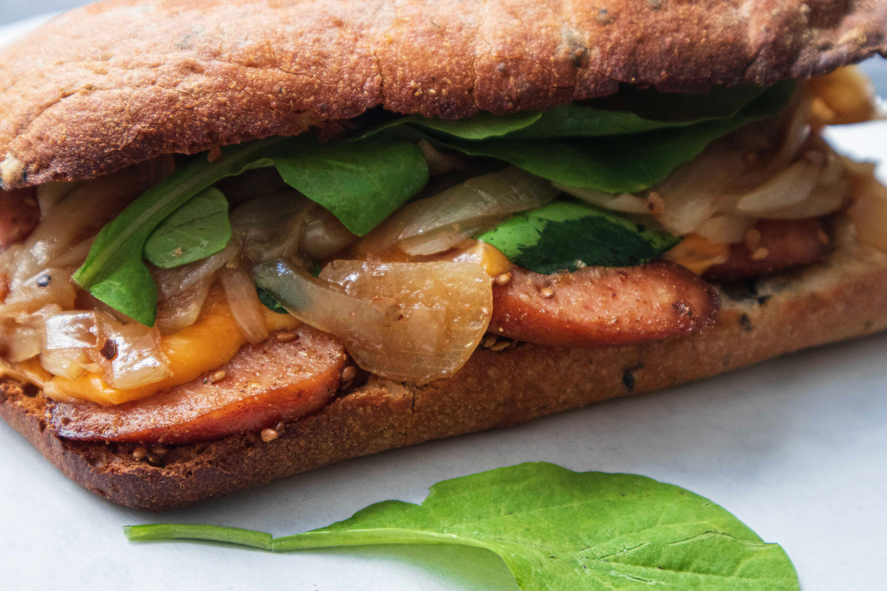

Slow Cooker Sausage

A simple meal for gaming nights
This slow cooker recipe turns out tender,
sauce-coated sausages you can pile onto sandwiches or serve over rice for an easy,
hands-off warm dinner.
Check the ingredients 🫕
- 8 (4 ounce) links fresh Italian sausage
- 1 (26 ounce) jar spaghetti sauce
- 1 green bell pepper, seeded and sliced into strips
- 1 onion, sliced
- 6 hoagie rolls, split lengthwise (Optional)